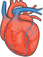
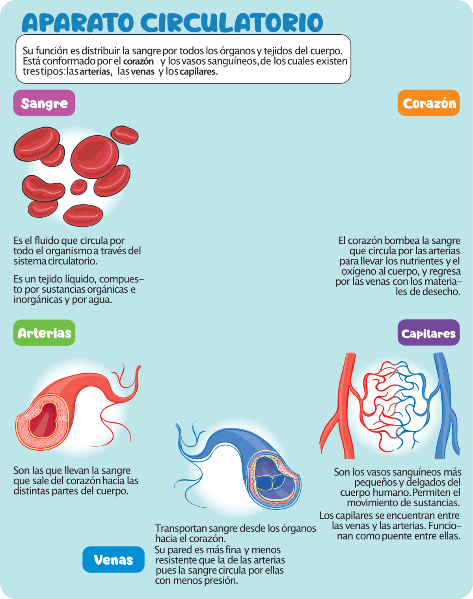
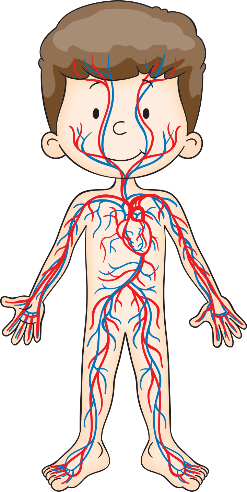

Esta conformado por el corazón, y los vasos sanguíneos, de los cuales existen tres tipos: las arterias, las y los capilares.
Es un tejido líquido, compuesto por sustancias orgánicas e inorgánicas y por agua.
Su pared es más fina y menos resistente que la de las arterias pues la sangre circula por ellas con menos presión.
Son los vasos sanguíneos más pequeños y delgados del cuerpo humano. Permiten el movimiento de sustancias.
El corazón bombea la sangre que circula por las arterias para llevar los nutrientes y el oxígeno al cuerpo, y regresa por las venas con los amteriales de desecho.

